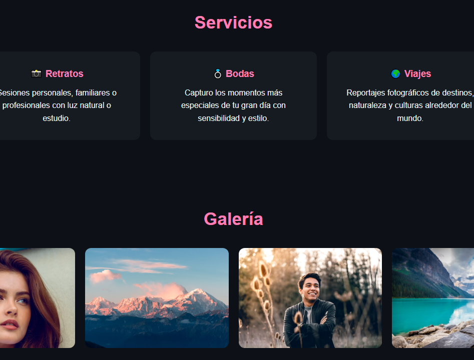
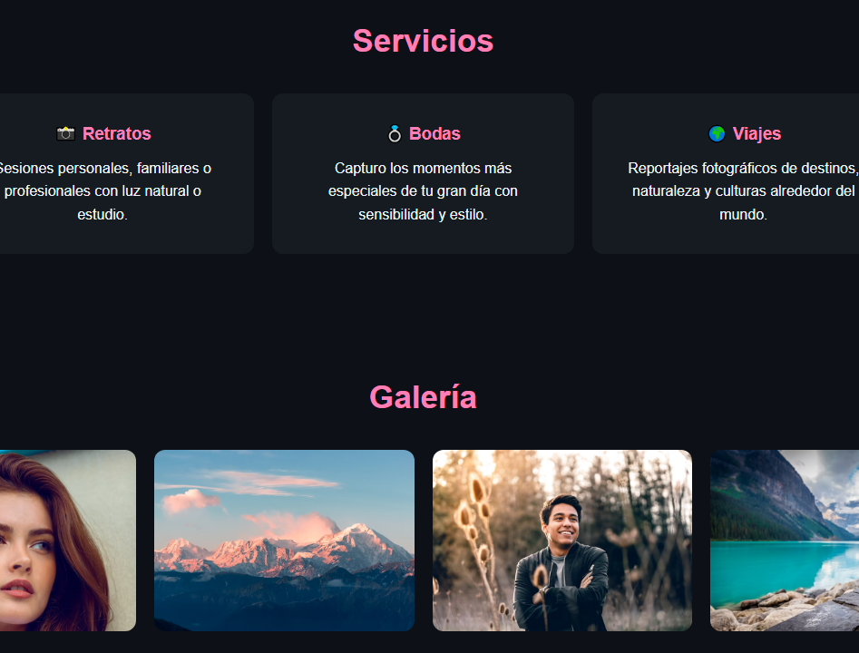
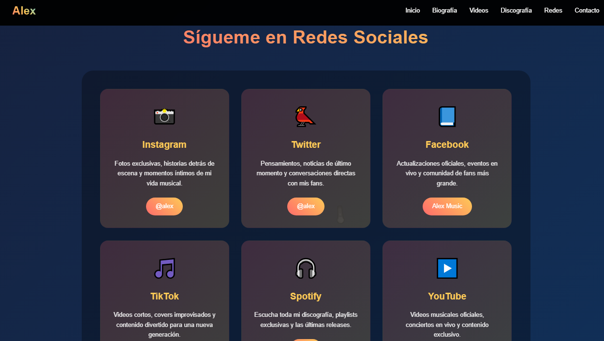
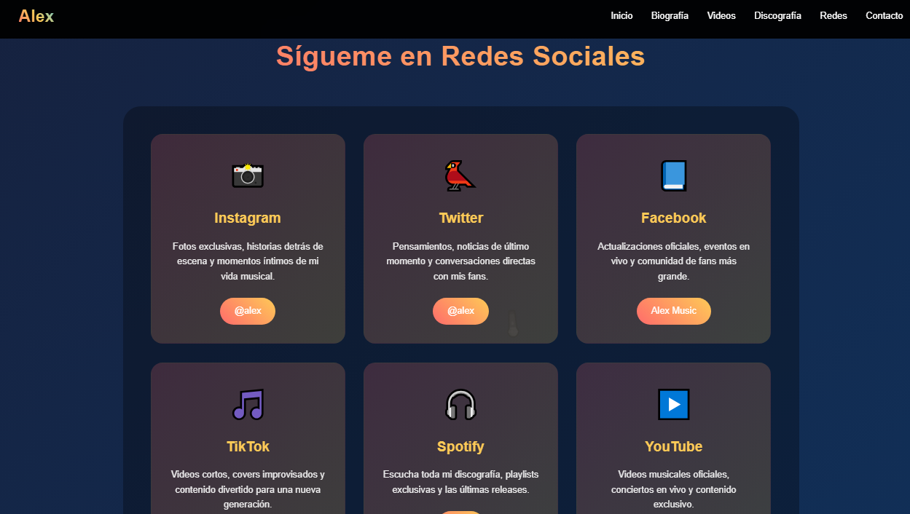

Estas páginas son modernas, limpias y totalmente personalizadas para que se adapten a tu estilo. Son ideales para destacar en entrevistas, compartir con posibles clientes o simplemente para tener un espacio donde la gente pueda descubrir tu talento.
En un mundo donde la primera impresión es digital, un portafolio creativo bien hecho puede abrirte muchas puertas. 🚀
Contactame👉 Ejemplo de este tipo de página:
Portafolio de un fotógrafo con galería de imágenes 📸
Un portafolio digital diseñado para fotógrafos que desean mostrar su arte de manera profesional. Incluye una galería de imágenes atractiva, secciones personalizadas para destacar proyectos y un estilo visual que resalta cada fotografía como una obra única.
portafolio 


Página de un músico con biografía, videos y enlaces a sus redes 🎵
Una página web para músicos que combina estilo y personalidad. Con biografía detallada, videos destacados y enlaces directos a redes sociales y plataformas de música, todo en un solo lugar para conectar con tu audiencia de forma profesional y creativa.
pagina de musica 
